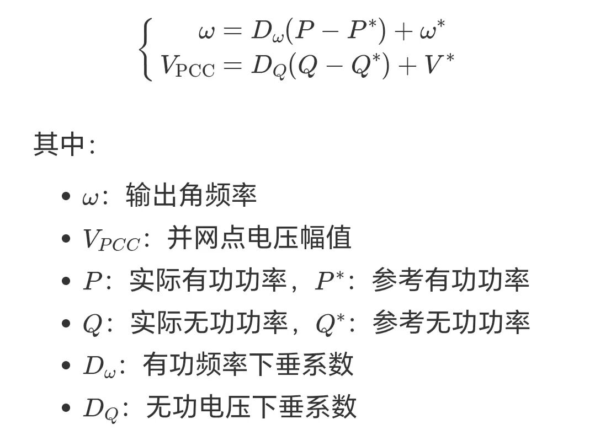
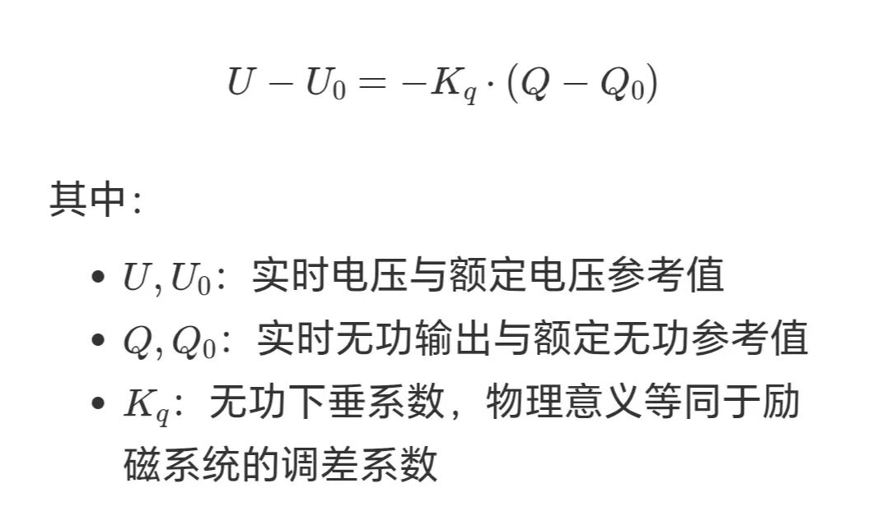

下垂控制是一种经典的构网型控制策略，通过调节功率与频率、电压的关系实现系统稳定。其基本原理是：
传统下垂控制包含两个控制环：

下垂控制的工作原理：
1、有功-频率调节（P-f）：当系统频率下降时，PCS自动增加有功功率输出；频率上升时减少输出。
2、无功-电压调节（Q-U）：当母线电压下降时，PCS自动增加容性无功输出补偿电压压降。

当感性负载启动导致母线电压下降时，PCS依据该物理模型自动增加容性无功输出，补偿电网电压压降。
Kq物理意义等同于励磁系统的调差系数，决定了电压偏差与无功输出的线性关系。利用积分环节对电压偏差的累积效应，平滑调整PCS的无功基准点，将关键母线电压无差拉回至目标值，彻底消除一次调压固有的稳态偏差。
3、自主均分能力：多台PCS可依据自身容量比例自动分担系统的无功需求，无需通信互联即可避免并联系统中的无功环流问题。